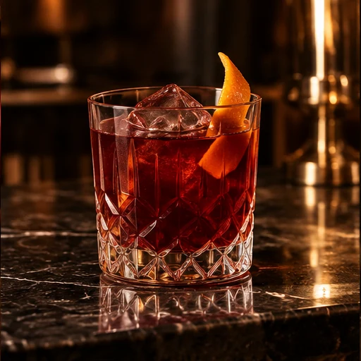

N°01Velvet HourRye · vermouth rosso · cherry bitters€16↗N°02Black TieVodka · cold brew · cacao nib · salt€15↗N°03Smoke & OakSingle malt · smoked demerara · orange oil€18↗N°04Scarlet LetterGin · hibiscus · pomegranate · lime€16↗N°05Midnight FizzChampagne · elderflower · poached pear€19↗N°06Dirty NocturneVodka · olive brine · sea salt · dill€15↗
A considered selection of house signatures. Please let our team know about allergies or preferences.